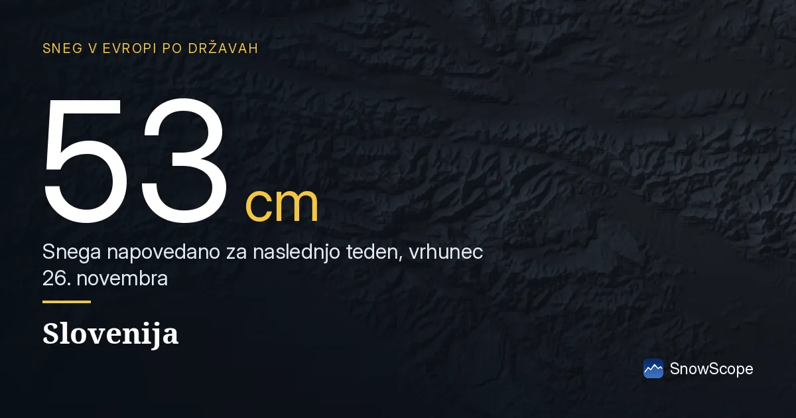
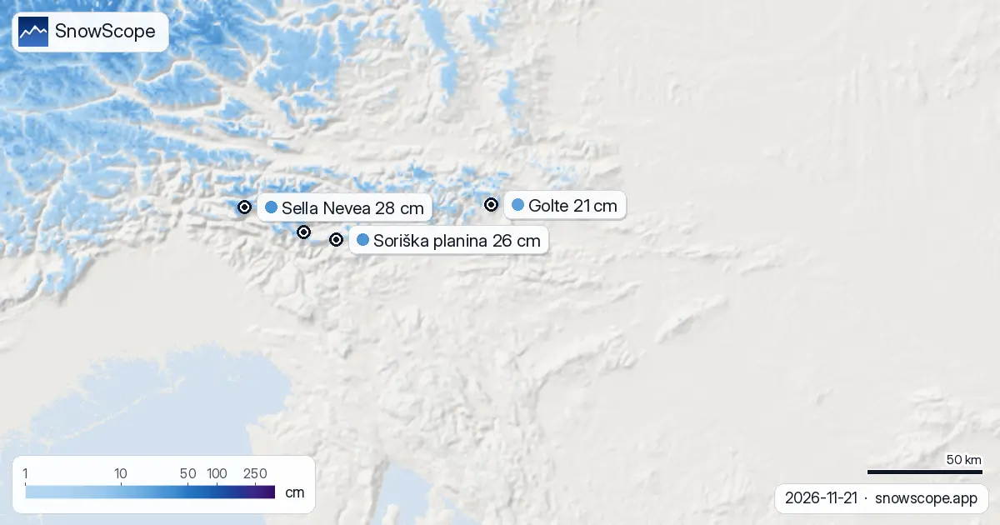

Slovenija: 53 cm snega napovedano za naslednjo teden, vrhunec 26. novembra
Slovenija bo v naslednjih sedmih dneh prejela do 53 cm novega snega, s snežnim vrhuncem 26. novembra, ko bo padlo 25 cm. Viharjenja tega tedna bo dodalo pomembno količino vode v gore, zvišalo snežno mejo in obnovilo snežno odejo po nedavnem taljenju.
Oglejte si snežno napoved za Sella Nevea v aplikaciji SnowScopeVišina snega, opozorila in 3D zemljevid, brezplačno.
Kaj nas čaka v naslednjih sedmih dneh
Proti slovenskim gorам se pomika obsežen snežni sistem. Med zdajšnjim časom in 28. novembrom bodo visoke nadmorske višine prejele do 53 cm snega. Napoved kaže, da bo večina tega snega padla med zdajšnjim časom in 26. novembrom, pri čemer bo 25 cm padlo v enem samem dnevu. Ta koncentrirani dogodek pomeni hitro dovajanje vode v gorski snežni pokrov.
Tridnevno obdobje, ki se je pravkar končalo (18.–21. november), je v Julijcih pustilo 28 cm in 44 cm v Kamniško-Savinjskih Alpah. To zaporedje je stabiliziralo razmere na večjih nadmorskih višinah. Prihajajući sistem bo dvignil snežno mejo in zapolnil vrzeli, ki jih je pustilo nedavno toplo obdobje.
| Smučišče | Višina snega | Novi sneg, 72 h | Naslednji dnevi | Vrh |
|---|---|---|---|---|
| Sella Nevea | 28 cm | 36 cm | 22 cm | 2.137 m |
| Soriška planina | 26 cm | 1 cm | 8 cm | 1.526 m |
| Golte | 21 cm | 4 cm | 10 cm | 1.570 m |
| Vogel | 17 cm | 12 cm | 22 cm | 1.731 m |
| Krvavec | 14 cm | 21 cm | 23 cm | 1.963 m |

Kjer bo sneg najgloblji
Sella Nevea je na največji nadmorski višini 2.137 m in že ima 28 cm snega iz nedavnih viharjev. V naslednjih treh dneh bo prejela do 22 cm več, saj bo ohranjena kot glavna snežna zajetnica. Krvavec na 1.963 m bo prav tako profitiral, saj bo dobil 23 cm v treh dneh in dosegel uporabno globino.
Nad 2.000 m v celotnem območju je snežni pokrov zdaj popoln (100 odstotkov). Med 1.500 in 2.000 m je pokrov 83-odstoten, s povprečno globino 7 cm. Prihajajući sneg bo potisnit zanesljiv pokrov do približno 1.500 m do konca tedna, kjer je shranjevanje vode najpomembnejše za zimski odtok.

Globina snega zdaj in v tednu naprej
Ta skupni seštevek je še vedno daleč pod 1.160 km², zabeleženo pred sedmimi dnevi, pred toplim obdobjem. Prihajajući sneg bo ta trend ostro obrnit.
V treh dneh po 26. novembru (27.–29. november) se bodo padavine oslabile na največ 18 cm. Drugi teden (29. november do 5. decembra) izgleda bolj suho, z le 15 cm. Ta razporeditev pomeni, da главни vnos vode prihaja v naslednjih 5 do 6 dni, nato se upočasni.
Gorske cone in zajetnice
Snežna meja je zdaj na 1.500 m. Nad to, so razmerja zaklenjena: povprečna globina 7 cm od 1.500 do 2.000 m in 20 cm od 2.000 do 2.500 m. Pod 1.500 m se malo snega obdrži (povprečna globina 1 cm med 1.000 in 1.500 m; skoraj nič pod 1.000 m).
Ko 25 cm pada 26. novembra, bodo najvišje cone dosegla 30–45 cm, odvisno od orientacije in terena. Pas 1.500 do 2.000 m—kritičen za shranjevanje vode—bo dobil večino novega snega in hitro narasel proti 30 cm. Tu se gradijo zimske zaloge vode.
Nedavne spremembe v pokritosti
Zadnjih pet dni je videlo ostre nihaje. Snežni pokrov je padel s 1.130 km² (16. november) na vsega 260 km² (18. november), ko je topel zrak stalil nižje nakalone. Svež sneg 19. novembra ga je potisnil nazaj na 760 km². Današnja številka 750 km² kaže še manjšo izgubo, vendar bo prihod težjega snega ta padec ustavil.
Sella Nevea je vodila skozi celoten čas, saj je danes ohranila 28 cm. Soriška planina in Golte sta prejeli malo svežega snega (1–4 cm v 72 urah) in sta nižje v smislu globine in nadmorske višine, zato bosta sneg dobivali počasneje, ko se bo sistem развивati.
Bližnji kontekst: Avstrija in Italija naprej
Avstrijske visoke ledeniskaste vrhove že držijo 63 cm (Stubaier Gletscher) in se soočajo do 35 cm več v sedmih dneh. Vodioca Italije, Pfelders, je pri 118 cm—mnogo globlji kot Slovenija. Ti sosedje kažejo, kaj dobro vzpostavljen zimski snežni pokrov izgleda; Slovenija še gradi proti temu standardu. Prihajajući teden je kritičen korak v tej smeri.
Nasveti za smučarje
- Pričakujte hitro povečanje globine snega med zdajšnjim časom in 27. novembrom, posebej nad 1.500 m, kjer bo večina vode shranjena. Odpravite se visoko, da najdete najgloblji nov sneg.
- 26. novembra bodo prispele največje padavine. Načrtujte gorske dejavnosti za jasna vremenska okna med 22. in 25. novembrom, če vas skrbi stabilnost; sveži sneg vedno nosi tveganje začasne nestabilnosti.
- Pod 1.500 m ostaja snežni pokrov mozaičen. Zgodnje kamnine in tanka tla so verjetni; pazljivo preverite dejanske razmere na nižjih pobočjih, dokler se pokrov ne zgosti.
- Konec novembra bo vnos vode v tokove in zajetnice skokovito skočil, ko se pospešeno taliranje iz toplih baznih plasti pod novim snegom. Sproti spremljajte uradne posodobitve upravljanja vode, če delate s horsko hidrologijo.
- Pred vsako dejavnostjo izven teras se posvetujte s to uradnim lavinama plakato (ARSO), posebej na strmih pobočjih, ki prejemajo sveži sneg med 1.500 in 2.000 m.
About these numbers
Resort snow depths are the deepest snow on the resort's upper slopes on the date shown; they are estimates for an area, not a measurement at one point. Forecasts can change. Always read the official avalanche bulletin before going off-piste.
Cite this report
For research, teaching or the press: the numbers and charts are free to reuse under CC BY 4.0 with this citation.
SnowScope (2026), Slovenija: 53 cm snega napovedano za naslednjo teden, vrhunec 26. novembra, https://snowscope.app/blog/sl/2026/11/slovenia-snow-on-the-way-21-november-2026.html, accessed 2026-11-21
SnowScope (Atlas Labs). (2026, November 21). Slovenija: 53 cm snega napovedano za naslednjo teden, vrhunec 26. novembra. SnowScope snow reports. https://snowscope.app/blog/sl/2026/11/slovenia-snow-on-the-way-21-november-2026.html
BibTeX
@misc{snowscope2026sloveniasnowontheway21no,
author = {{SnowScope (Atlas Labs)}},
title = {Slovenija: 53 cm snega napovedano za naslednjo teden, vrhunec 26. novembra},
year = {2026},
month = nov,
howpublished = {\url{https://snowscope.app/blog/sl/2026/11/slovenia-snow-on-the-way-21-november-2026.html}},
note = {Published 2026-11-21 12:41 UTC; accessed 2026-11-21}
}· CC BY 4.0 · Methods, data and tools →
Sella Nevea: snow and temperature by height, this winter vs last (tools) →
Follow Sella Nevea
Brezplačno: sporočilo, ko prihaja novi sneg, in napoved vsako jutro.